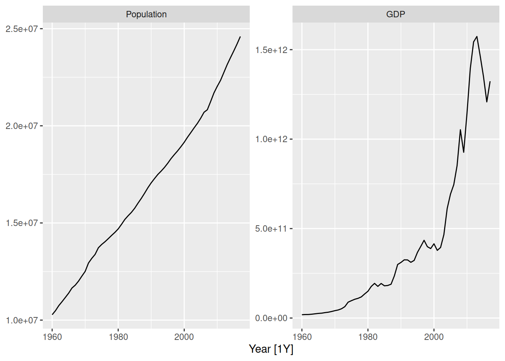
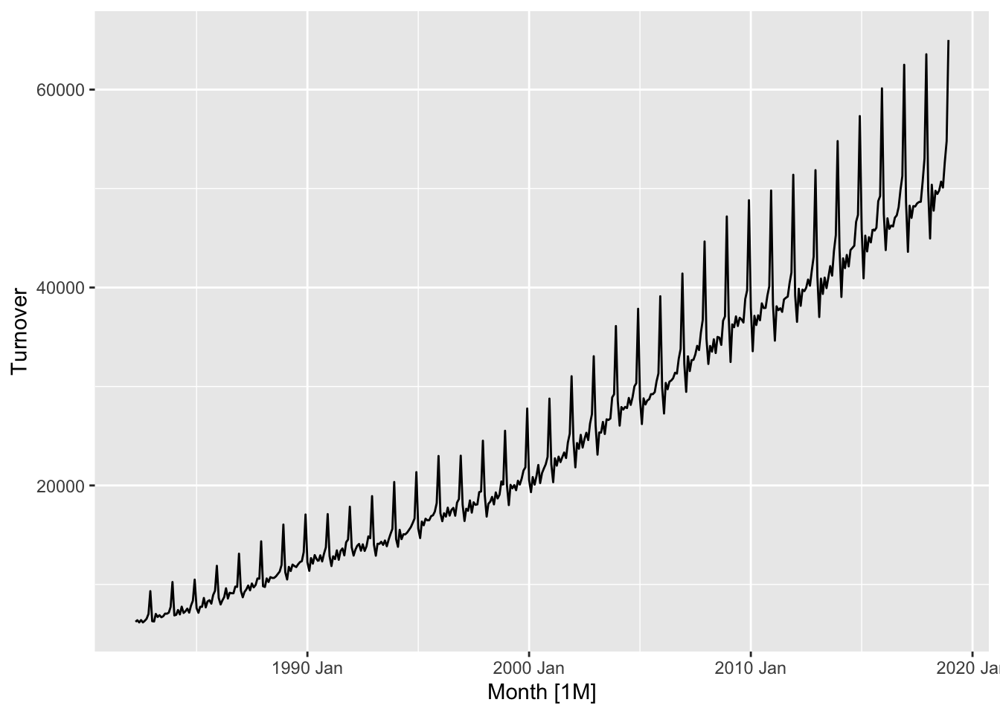
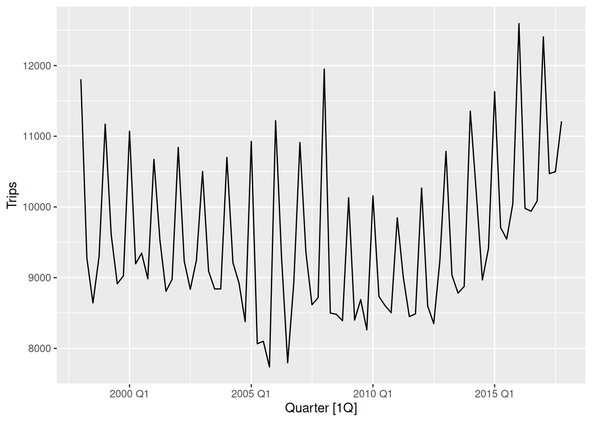
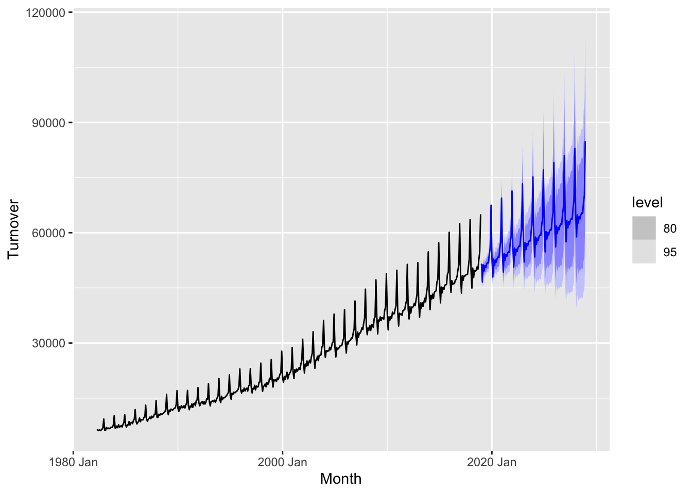
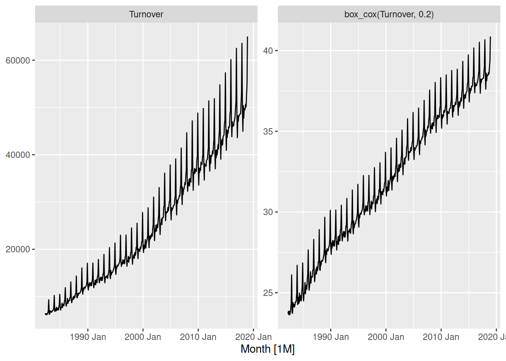

library(tsibble)
library(tsibbledata)
library(tidyverse)
library(fable)Exercises
Check with your mentor on Slack
Learn
Exponential smoothing and ARIMA models allow more dynamic patterns to be modelled for forecasting. This allows the model to learn and adapt to changes in the trend, seasonality, and other subtle patterns to produce forecasts that accurately reflect the most recent data.
Expontential smoothing
Exponential smoothing models can handle both additive and multiplicative patterns, and models the series based on three primary components: the error, trend, and seasonality (ETS). Since multiplicative patterns can be directly modelled with ETS, there is no need to transform the data.
ETS models are specified using the ETS() function.
ETS specials
The specials for the ETS model describe the structure of the three components.
- error(): The structure of the error, either additive (
"A") or multiplicative ("M") - trend(): The structure of the error, either none (
"N"), additive ("A") or multiplicative ("M"). Adding"d"afterwards ("Ad"or"Md") will dampen the trend, flattening it out into the future. - season(): The structure of the seasonality, either none (
"N"), additive ("A") or multiplicative ("M").
More information is available in the ?ETS help file.
Additive components have a constant variation with the level of the series, while multiplicative components have a proportional variation to the level of the series.
For trend, an additive trend is mostly straight (linear) while a multiplicative trend curves up or down (exponential).
global_economy |>
filter(Country == "Australia") |>
autoplot(vars(Population, GDP))
Australia’s population has a linear (additive) trend, while the GDP has an exponential (multiplicative) trend.
You can also notice that the error (randomness) is additive for population, but multiplicative for GDP since the series is more variable at larger GDP timepoints.
aus_retail |>
summarise(Turnover = sum(Turnover)) |>
autoplot(Turnover)
tourism |>
filter(Purpose == "Holiday") |>
summarise(Trips = sum(Trips)) |>
autoplot(Trips)

Seasonality is multiplicative if its shape gets larger as the series increases, which is the case for Australian retail turnover. Australian holiday tourism is more additive, since the size of the seasonality does not change much as the number of trips increases or decreases.
ETS models without specials will automatically select the most appropriate model for the data.
aus_turnover <- aus_retail |>
summarise(Turnover = sum(Turnover))
fit <- aus_turnover |>
model(ETS(Turnover))
fit# A mable: 1 x 1
`ETS(Turnover)`
<model>
1 <ETS(M,A,M)>The automatically selected ETS(M,A,M) model matches the patterns in the Australian retail turnover data. The trend is a straight line (additive), while the error and seasonality grows proportionately to the amount of turnover (multiplicative).
As was done with the benchmark and regression models, we can:
- look at the model with
tidy(),glance(), andaugment(), - produce forecasts with
forecast().
Let’s see how the ETS forecasts look.
fit |>
forecast(h = "10 years") |>
autoplot(aus_turnover)
Very nice! The trend matches the history, and the seasonality grows in size much like the historical data. You can also see the forecasts are very confident (small intervals) for the first two years, but get less confident (larger intervals) as we forecast further into the future.
Your turn!
Produce forecasts from an automatically selected ETS model for Australia’s print media turnover. Does the chosen ETS model align with the patterns you see in the data?
ARIMA
ARIMA models can also capture trends and seasonality, but it is achieved in a very different way. Rather than directly representing the structure of the trend and seasonal components like ETS, it uses a combination of data transformation, past values and past errors to produce forecasts.
Transformations needed!
Unlike ETS models, an ARIMA model must have additive patterns in the data to work well. So if the data has multiplicative seasonality, use an appropriate transformation to simplify the patterns before estimating an ARIMA model.
ARIMA models are specified using the ARIMA() function.
ARIMA specials
The specials for the ARIMA model describe the number of lags and differences in the model.
- pdq(): The non-seasonal parameters
- PDQ(): The seasonal parameters
The number of autoregressive (AR) lags are set by p and P, while the number of moving average (MA) lags are set by q and Q.
The long term forecasting behaviour (trends and seasonality) are controlled by the differences d and D, where a seasonal difference imparts seasonality and two or more differences (or constants) produces a trend.
More information is available in the ?ARIMA help file.
Much like ETS models, an automatically selected ARIMA will be estimated if the specials aren’t specified.
aus_turnover |>
autoplot(vars(Turnover, box_cox(Turnover, 0.2)))
A box-cox transformation with \(\lambda = 0.2\) seems to convert the multiplicative patterns in the data into additive ones. We need to use this transformation when estimating an ARIMA model.
fit <- aus_turnover |>
model(ARIMA(box_cox(Turnover, 0.2)))
fit# A mable: 1 x 1
`ARIMA(box_cox(Turnover, 0.2))`
<model>
1 <ARIMA(3,1,0)(2,1,1)[12]>The chosen model contains a seasonal difference and a non-seasonal difference, with 2 seasonal AR and 3 non-seasonal AR lags and 1 seasonal MA term.
fit |>
forecast(h = "10 years") |>
autoplot(aus_turnover)
The forecasts from this model also look good!
Your turn!
Produce forecasts from an automatically selected ARIMA model for Australia’s print media turnover. Don’t forget to find and use a suitable transformation to simplify the multiplicative patterns in the data.
ETS or ARIMA
Both ETS and ARIMA models work well for time series that contain trends and seasonality, so which works better? ETS models are well suited to time series with multiplicative patterns since they can be directly modelled without transformations. ETS is also more explainable, since the common temporal patterns of trend and seasonality are directly modelled. ARIMA models however are more capable at incorporating subtle patterns like short-term correlations into the forecasts, and are capable of modelling cyclical data. Often pracitioners use an average of the forecasts from both models to produce a more accurate forecast (ensembling).
In the day 5 materials we will learn about accuracy measures, which will allow us to more precisely identify which model works best on specific datasets.
Apply
In this exercise, you use exponential smoothing and ARIMA models to produce forecasts of future administered vaccine doses for the next 12 months.
ETS
Specify and train automatic Exponential Smoothing model
Observe the model table and explain what each row and column represent
Extract ETS model’s output using
report(),tidy(),glance()Extract the components of the selected ETS model
Generate forecasts using ETS and observe the forecast table
Visualize forecasts
Use the specific functions to determine manually the components and parameters of ETS models
ARIMA
Specify and train automatic ARIMA model
Observe the model table and explain what each row and column represent
Extract ARIMA model’s output using
report(),tidy(),glance()Generate forecasts using ARIMA
Visualize forecasts
Determine model components manually